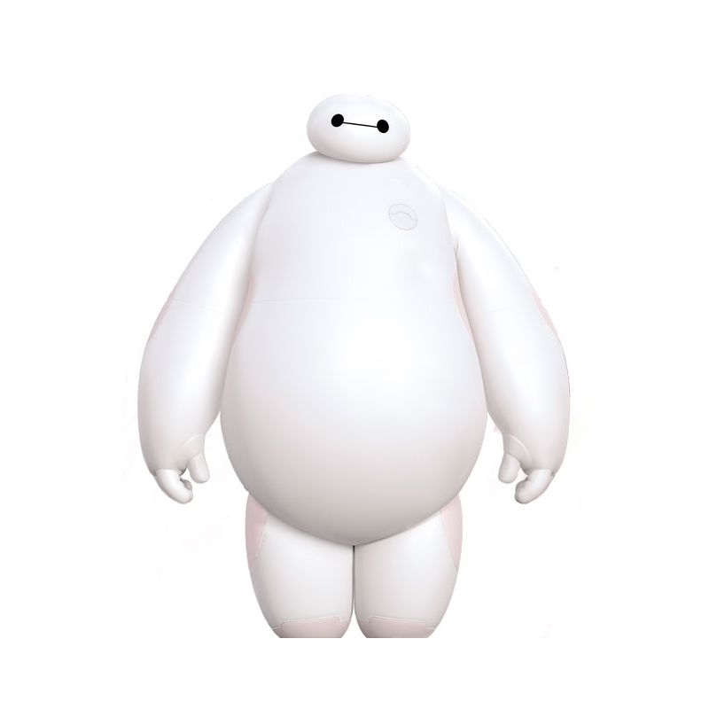

Baymax
o-o
“Hello. I am Baymax, your personal healthcare companion.”
Introduction

Baymax is the deuteragonist of Big Hero 6. He is a healthcare robot built by Tadashi Hamada and a member of the superhero team Big Hero 6. Baymax was created by the brilliant Tadashi Hamada as a healthcare providing nurse to improve healthcare around the world.To provide Baymax his programming and personality, Tadashi generated a healthcare chip encoded with the inscriptions that made Baymax the health-oriented and lovable robot he truly is. The chip also prevents Baymax from harming humans willingly; without it, this limit is compromised.Baymax is instantly activated by the sound of distress, and can only deactivate once his current patient states "I am satisfied with my care." If not, he will not stop helping nor leave unless the patient confirms their satisfaction.
More information
The overall appearance is designed to be soft and non-threatening so that he can assist his patients without harming them. He appears as a wide robot covered in inflatable vinyl material, causing his outward appearance to resemble, as Hiro calls him, a big marshmallow. But his "true" appearance, which can only be seen by looking deep inside the vinyl, is a flexible carbon-fiber skeleton covered in plastic and wires with thick limbs holding the rest of his body together. The skeleton also has a projector in its chest for Baymax to display. Baymax's head is relatively simple-looking, consisting of only two "eyes" (actually hyperspectral cameras) and a mouth-esque line connecting them. His access port is on the left side of his chest, and can be recognized by its badge-like appearance. In it are four slots, so Baymax can hold up to four different program chips.
Character background

The character design of Baymax was inspired by hardcore robot research in a Pittsburgh lab. In 2011, Carnegie Mellon University scientist Siddharth Sanan, working with Mike Ornstein and Justin B. Moidel, under the guidance of Professor Christopher Atkeson, built a functioning, inflatable robot arm — a breakthrough in what is known as soft robotics. Soft robotics provide a number of real-world benefits, some of which are illustrated in Big Hero 6. In the movie, Baymax is a care-giver robot that attempts to take care of a boy, often by holding and picking him up.